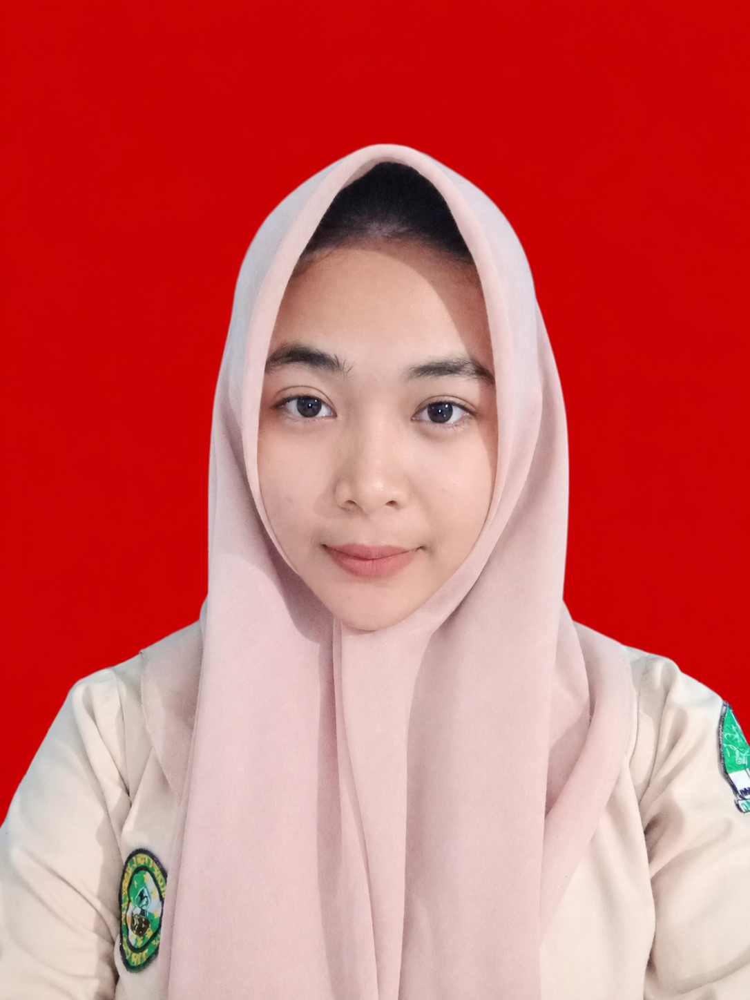

Siswi SMK TKJ Kelas 12
Kayla Nasywa Hanifah
SMK Ma'arif NU Tirto • Ex-PKL 4 Bulan
Saya siswi 12 TKJ 1 yang disiplin dan bertanggung jawab. Memiliki ketertarikan tinggi pada pembuatan kabel jaringan, konfigurasi Router MikroTik, Switch, VLAN, serta administrasi server.
Kab. Pekalongan
Menyanyi
Cita-cita: Guru
Keahlian Utama
MikroTik
Router & Winbox
Setting VLAN
Switch & Routing
aaPanel
Server Host Setup
Kabel LAN
Crimping & Test
Praktikum & Pengalaman
Jaringan
Hotspot MikroTik
Setting user manager, limit bandwidth, dan portal login hotspot.
Server
Setup Server aaPanel
Instalasi & manajemen server hosting berbasis web panel.
PKL 4 Bulan
IT Support Trainee
Maintenance jaringan kantor, crimping kabel, & instalasi PC.
Hubungi Kayla 🎀
Ingin berdiskusi seputar dunia Jaringan TKJ atau tawaran kerjasama? Silakan klik tombol di bawah ini: